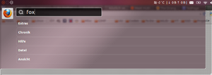
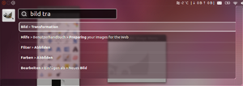

HUD
Dieser Artikel wurde für die folgenden Ubuntu-Versionen getestet:
Ubuntu 16.04 Xenial Xerus
Ubuntu 14.04 Trusty Tahr
 Ein Head-Up-Display (wörtlich: Kopf-oben(lassen)-Anzeige; sinngemäß: Anzeigefeld in Blickrichtung, Blickfeldanzeige) ist ein Anzeigesystem, bei dem für den Nutzer wichtige Informationen in das Sichtfeld projiziert werden.
Ein Head-Up-Display (wörtlich: Kopf-oben(lassen)-Anzeige; sinngemäß: Anzeigefeld in Blickrichtung, Blickfeldanzeige) ist ein Anzeigesystem, bei dem für den Nutzer wichtige Informationen in das Sichtfeld projiziert werden.
Beim von Canonical  entwickelten „Head-Up-Display” (kurz: HUD) handelt es sich dagegen um eine Software-Komponente. Sie wurde am 24. Januar 2012 der Öffentlichkeit vorgestellt
entwickelten „Head-Up-Display” (kurz: HUD) handelt es sich dagegen um eine Software-Komponente. Sie wurde am 24. Januar 2012 der Öffentlichkeit vorgestellt  . HUD soll das mit Unity eingeführte Globale Menü in der Titelleiste mittel- bis langfristig ersetzen. Technisch basiert das HUD auf dessen Mechanismus, das Menü des jeweils aktiven Fensters am oberen Bildschirmrand anzuzeigen. Damit wurden erneut grundlegende Änderungen bei der Menüführung von Applikationen eingeführt.
. HUD soll das mit Unity eingeführte Globale Menü in der Titelleiste mittel- bis langfristig ersetzen. Technisch basiert das HUD auf dessen Mechanismus, das Menü des jeweils aktiven Fensters am oberen Bildschirmrand anzuzeigen. Damit wurden erneut grundlegende Änderungen bei der Menüführung von Applikationen eingeführt.
Nachteile herkömmlicher Menüs¶
Ein Ärgernis für viele Nutzer ist, dass sich je nach Anwendung dieselben Funktionen in verschiedenen Menüs wiederfinden. So können die Einstellungen eines Programms unter den Menüpunkten Bearbeiten, Werkzeuge oder Extras untergebracht sein. Mark Shuttleworth bezeichnet in seinem Blog (siehe Links) das Head-Up-Display als „Vocabulary User Interface“ (VUI) – und nicht mehr wie bisher GUI, weil „es näher an den Gedankengängen der Nutzer“ sei.
Besonders nachteilig bei herkömmlichen Menüs ist darüber hinaus, dass diese häufig verschachtelt sind, was die Bedienung erschwert. Folglich wird dem Benutzer dort auch sehr vieles angezeigt (wie etwa Texte), obwohl der Benutzer meist weiß, was er anklicken muss. Auch ist es ziemlich schwierig, solche Menüs mit der Tastatur zu bedienen – es sei denn, der Benutzer merkt sich die jeweiligen Tastaturkürzel, womit sich der Benutzer Zeit spart. Auch hier überwiegt der Nachteil, dass der Nutzer genau wissen muss, wie das Tastaturkürzel lautet, um effizient arbeiten zu können.
Ziele des Head-Up-Displays¶
Das Ziel von HUD ist, dass Programme von nun an durch die „Absichten” des Benutzers bedient werden. Es basiert dabei auf dem gleichen Konzept wie die globale Suche der Unity-Dash.
HUD ist verglichen mit einem traditionellen Menü ein „schlaues“ Menü. Gemeint ist damit, dass es sofort Vorschläge macht, die der Nutzer meist auswählen kann, ohne sehr viel tippen zu müssen. Dabei lernt es zudem die Verhaltensweisen des Nutzers, wodurch häufig genutzte Menüpunkte höher priorisiert werden und somit schneller vorgeschlagen werden als Menüpunkte, die eher seltener genutzt werden. Das Gute dabei ist, so Mark, dass keine Anpassung der Applikationen notwendig ist. Alle Programme, die bereits das bisherigen globale Menü von Unity unterstützen, sind mit dem Head-Up-Display kompatibel, da sie mit dem Indicator-Menü des Systems kommunizieren.
Installation¶
Ab Unity Version 5.4 ist HUD in den offiziellen Paketquellen enthalten und damit fester Bestandteil von Ubuntu 12.04. Eine Installation unter älteren Ubuntu-Versionen ist nicht vorgesehen.
Benutzung¶
  Aktiviert wird das HUD mit einem kurzen Druck auf die Alt -Taste; drückt man die Taste zu lange, erscheint das "Global"-Menü. Ist ein Programm aktiv, so geht das HUD davon aus, dass man Befehle selbigem erteilen möchte.
Zwei Beispiele:
Ist der Browser Firefox aktiv und öffnet man das HUD, so wird das Firefox-Icon links oben neben der Eingabezeile angezeigt, und die eingegebenen Buchstaben zielen in erster Linie auf Befehle rund um den Firefox.
Ist dagegen das Grafikprogramm GIMP aktiv und verwendet man HUD, so wird das GIMP-Icon angezeigt, und die eingegebenen Buchstaben werden als Befehle für GIMP interpretiert.
Das HUD lässt die gewohnten Menüpunkte verschwinden, durch die man bisher navigieren konnte. Ersetzt wird das Ganze durch ein Texteingabefeld. Dieses folgt dem Konzept der Eingabe eigener Absichten oder Ziele.
Während des Eintippens werden diverse Vorschläge angezeigt, die dann entweder mit der Maus oder mit der Tastatur ausgewählt werden können. Dieses Konzept nennt Mark Shuttleworth „intenterface”. Dieses Kunstwort setzt sich aus den beiden Wörtern „intent“ und „interface” zusammen. „Intent“ ist das Vorhaben und „interface” ist die Schnittstelle.
Die Suche nach den durch das HUD eingegebenen Befehlen basiert auf lokalisierten Menüs und ist tolerant gegenüber Vertippern. Zusätzlich speichert eine Datenbank, welche Menüeinträge der Anwender auswählt, um diese später bevorzugt anzubieten.
Zukünftiges im HUD¶
In Zukunft soll eine zusätzliche Sprachsteuerung implementiert werden. Was das Head-Up-Display noch nicht kann: wie die herkömmlichen, klassischen Menüs einen Überblick über die vorhandenen Menü-Funktionen geben. Allerdings wird schon daran gearbeitet. Wenn dieses Ziel erreicht ist, sollen herkömmliche Menüs aus Ubuntu verschwinden.
Fehler melden¶
Fehlermeldungen kann man direkt bei Launchpad erstellen. Unterscheiden muss man zwischen den beiden Projekten Unity und Application Menu.
Unity
, wenn es um das User Interface selbst geht (die Kennzeichnung mit HUD nicht vergessen!)Application Menu
, wenn es um die Software HUD geht (z.B. falsches „Matching“ von Eingabe- und Suchbegriffen)
Links¶
Head-Up-Display – Neuartiges Menü für Ubuntu – auf Ikhaya
Introducing the HUD. Say hello to the future of the menu
– Blogeintrag von Mark ShuttleworthOMG! Ubuntu! – Interview mit Jon Lea zum HUD
Theodore J. Goulds Blog – Technische Hintergründe zum HUD
- Erstellt mit Inyoka
-
 2004 – 2017 ubuntuusers.de • Einige Rechte vorbehalten
2004 – 2017 ubuntuusers.de • Einige Rechte vorbehalten
Lizenz • Kontakt • Datenschutz • Impressum • Serverstatus -
Serverhousing gespendet von